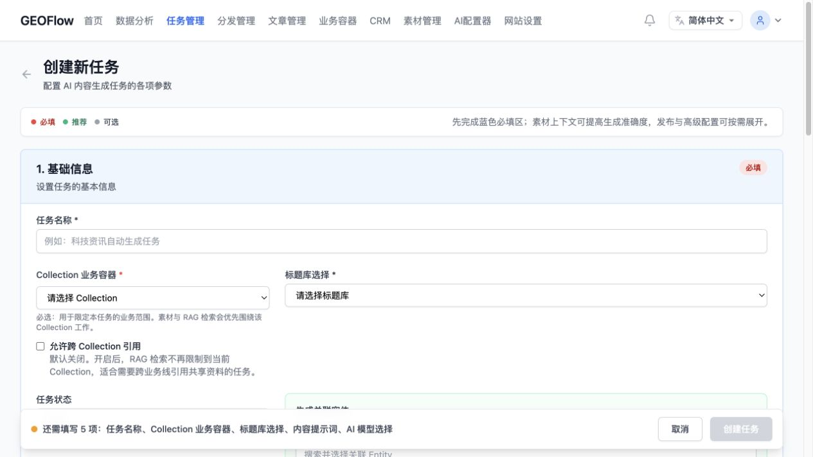
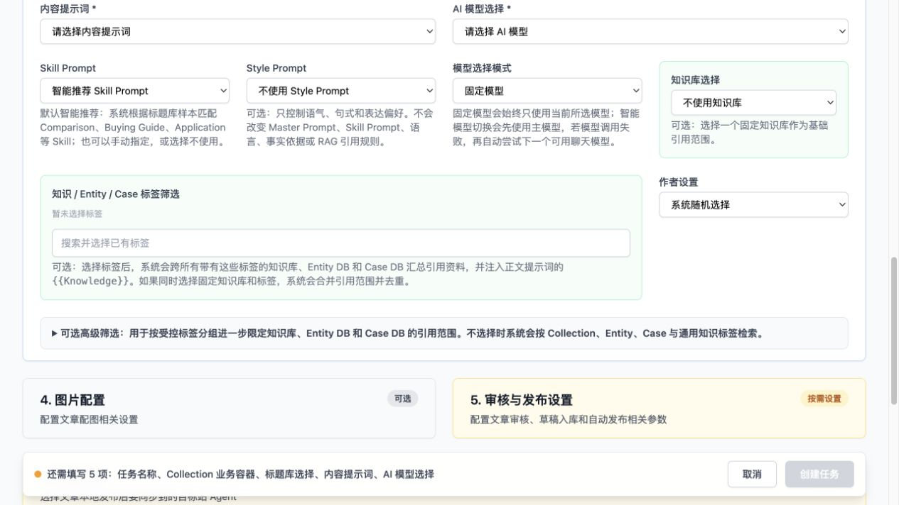
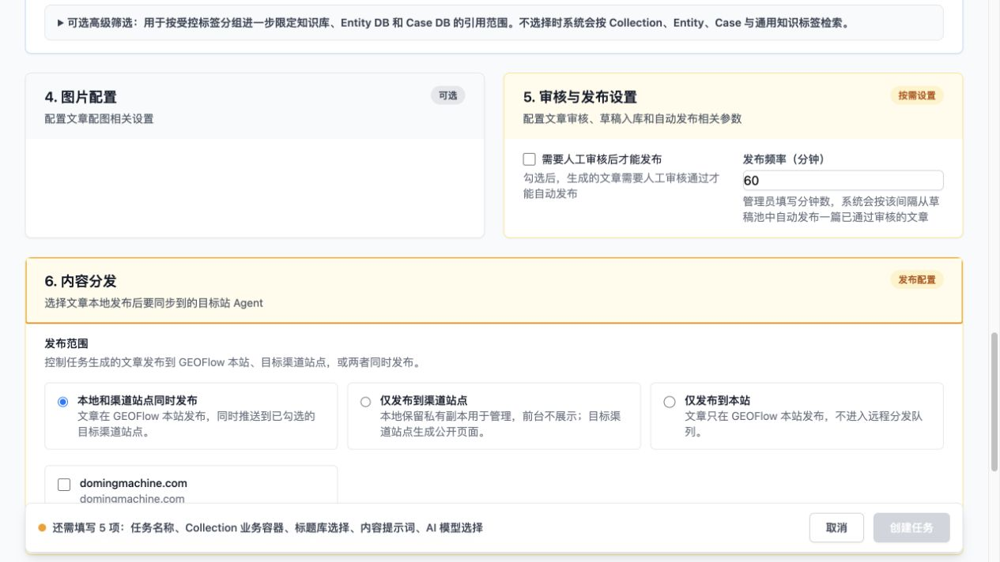
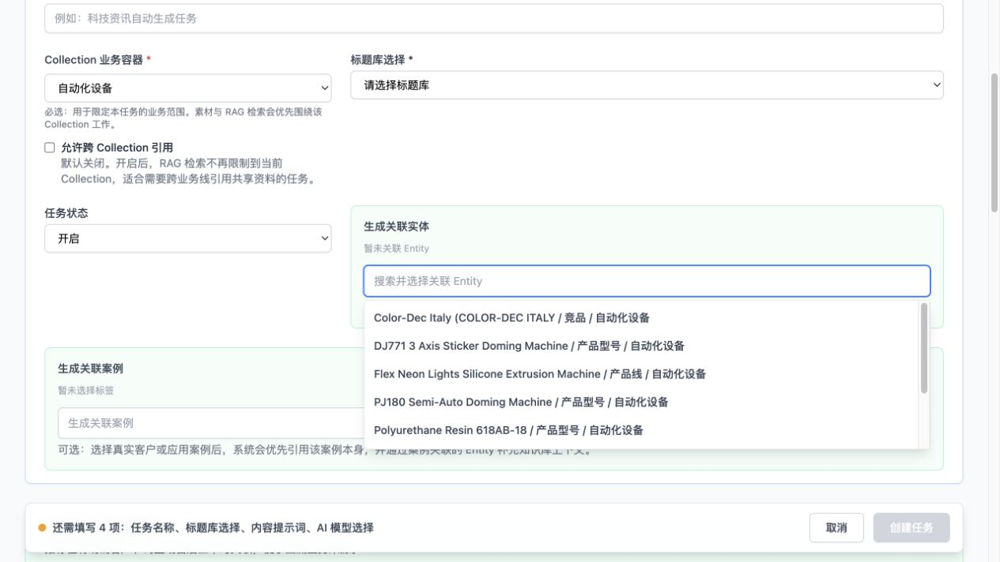
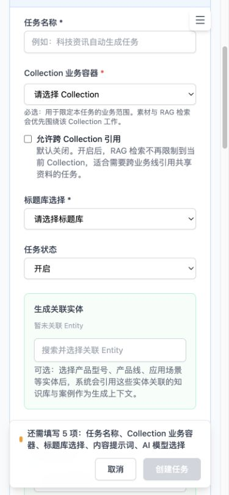

Step 1 · 默认入口与基础信息
一般
1 21
P0：底部固定操作栏遮挡页面内容和下方输入区域。应预留与操作栏等高的安全区，移动端改为紧凑操作栏。
2
P1：“基础信息”一次承载过多选择。建议只突出 Collection、标题库和语言，其余移入“更多设置”。
审核范围：默认入口、内容策略、审核分发、Collection / Entity 联动及移动端体验。核心目标是降低首次配置负担，同时保留高级生成能力。

1 2P0：底部固定操作栏遮挡页面内容和下方输入区域。应预留与操作栏等高的安全区，移动端改为紧凑操作栏。
P1：“基础信息”一次承载过多选择。建议只突出 Collection、标题库和语言，其余移入“更多设置”。

1 2P1：Master Prompt、Skill、Style 与模型同时出现，概念负担较大。默认只展示系统推荐结果，允许展开后人工覆盖。
P0：固定操作栏持续覆盖内容，且用户无法快速判断还剩多少必填项未完成。

1 2P0：审核与发布属于高风险动作，不宜与普通生成配置采用相同默认强度。建议默认“生成草稿，不自动发布”。
P1：渠道、审核规则和发布状态应按“生成 → 审核 → 分发”顺序组织，并明确哪些设置会立即产生外部动作。

1 2保留：选择 Collection 后过滤 Entity 的方向正确，是任务上下文收敛的重要入口。建议补充结果数量和“为何不可选”的空状态。
P1：联动说明文案仍偏系统术语，应改为用户结果语言，例如“仅显示此业务容器中的实体”。

1 2P1：移动端单页过长，用户缺少当前进度感。建议采用分步导航或可折叠章节，并显示“必填项完成度”。
P0：底部固定栏在窄屏占据过多高度，遮挡输入控件。应缩为单行主按钮，并将次要动作放入菜单。